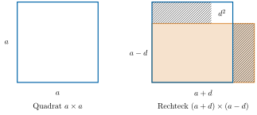
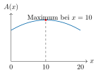

Aufgabe 6.9
Unter allen Rechtecken gleichen Umfangs, welches hat den grössten Inhalt?
Stellen Sie eine Hypothese auf und begründen Sie diese auf mindestens zwei verschiedene Arten.
- Beginnen Sie mit konkreten Beispielen
- Nutzen Sie algebraische, geometrische oder analytische Methoden
- Die dritte binomische Formel kann hilfreich sein
- Denken Sie an Mittelungleichungen
Das Quadrat hat unter allen umfangsgleichen Rechtecken den grössten Flächeninhalt. Diese Tatsache lässt sich auf vielfältige Weise begründen.
Algebraische Lösung
Wir gehen von einem Quadrat mit Seitenlänge $a=10$ cm aus und Umfang $U=40$ cm. Für den Flächeninhalt gilt dann $A=a^2=100$ cm$^2$. Wenn wir nun an einer Seite des Rechtecks «wackeln», bspw. die Seite verkürzen um eine Strecke $d=0.5$ cm, muss die andere Seite um die gleiche Strecke verlängert werden, damit der Umfang erhalten bleibt. Wir erhalten ein Rechteck mit Seitenlänge $10-0.5=9.5$ cm und $10+0.5=10.5$ cm. Für den Flächeninhalt gilt \begin{equation*} 9.5\cdot 10.5= 99.75 < 100 \text{ cm}^2 \end{equation*}
Das Rechteck hat einen kleineren Flächeninhalt als das umfangsgleiche Quadrat. Andere Werte von $d$ führen (stets aufgrund der dritten binomischen Formel) zur gleichen Schlussfolgerung:
\begin{equation*} (10-d)\cdot (10+d)= 100 - d^2< 100 \text{ cm}^2 \end{equation*}
Auch ist die Argumentation nicht von der Wahl des Umfangs abhängig. Wir haben damit mit Hilfe eines präformalen Beweises die Hypothese bestätigt.Formal: Wir betrachten ein Quadrat mit Seitenlänge $a$ und Umfang $4a$ und ein beliebiges dazu umfangsgleiches Rechteck mit den Seitenlängen $a-d$ und $a+d$. Diese hat notwendig einen kleineren Flächeninhalt da $(a-d)\cdot (a+d)= a^2- d^2< a^2$.
Geometrische Lösung.
Die algebraische Variante lässt sich auch gut geometrisch interpretieren:

Interpretation:
Das rot gefüllte Rechteck mit den Seitenlängen $(a+d)$ und $(a-d)$ hat die Fläche: $(a+d)(a-d) = a^2 - d^2$
Das Quadrat (in fach-Farbe umrandet) mit Seitenlänge $a$ hat die Fläche $a^2$.
Die rot schraffierten Bereiche zeigen, was vom Rechteck ausserhalb des Quadrats liegt, bzw. was vom Quadrat nicht vom Rechteck abgedeckt wird.
Das weisse Quadrat oben rechts mit Fläche $d^2$ zeigt genau die Differenz: $a^2 - (a+d)(a-d) = a^2 - (a^2 - d^2) = d^2$
Das Quadrat hat also stets eine um $d^2$ grössere Fläche als das umfangsgleiche Rechteck.
Diese beiden Lösungen sind mit den Mitteln der Sekundarstufe I gut lösbar. Es gibt allerdings noch weitere Lösungen die mit schulmathematischen Hilfsmitteln zu bewerkstelligen sind:
Funktionale Lösung
Wir betrachten ein beliebiges Rechteck mit Umfang $40$ cm. Die eine Seite des Rechtecks sei $x$, die andere Seite des Rechtecks muss dementsprechend $20-x$ sein. Der Flächeninhalt ist damit \begin{equation*} A(x)=x(20-x)=-x^2+20x \end{equation*}
Bei dieser Funktion handelt es sich um eine nach unten geöffnete Parabel mit den Nullstellen $x=0$ und $x=20$. Diese Parabel besitzt einen Hochpunkt, der aufgrund der Symmetrieeigenschaften der Parabel genau zwischen den beiden Nullstellen liegen muss. Damit erhalten wir $x=10$. Die andere Seitenlänge ist dementsprechend $20-x=20-10=10$. Den maximalen Wert erhalten wir damit genau dann, wenn das Rechteck ein Quadrat ist.
Auch diese Argumentation liesse sich formal für beliebige Umfänge zeigen. In diesem Fall ist die Funktion $A(x)=x(\frac{U}{2}-x)=-x^2+\frac{U}{2}x$ zu betrachten und führt zu der gleichen Schlussfolgerung.

Analytische Lösung
In der Sekundarstufe II werden solcherlei Probleme häufig mit analytischen Mitteln zur Extremwertbestimmung gelöst. Hierzu wird der Hochpunkt bestimmt, indem die Nullstelle der ersten Ableitung ermittelt wird. (Mehr dazu im Modul zu Funktionen und Funktionales Denken)
Beweis über die Mittelungleichung
Eine weitere etwas unbekanntere Lösungsvariante nutzt die Mittelungleichung: Das arithmetische Mittel ist stets grösser oder gleich dem geometrischen Mittel: \begin{equation*} \sqrt{ab}\leq\frac{a+b}{2} \end{equation*}
Gleichheit gilt genau dann, wenn $a=b$. (Der Beweis dieser Aussage lässt sich algebraisch oder geometrisch leicht nachweisen)
Wir gehen von einem Rechteck mit Seitenlänge $a$ und $b$ aus und einem konstanten Umfang $U=2(a+b)$. Damit gilt \begin{equation*} A=ab\leq\left(\frac{a+b}{2}\right)^2=\frac{(a+b)^2}{4}=\frac{U^2}{16} \end{equation*}
Der Flächeninhalt kann damit maximal einen Flächeninhalt von $\frac{U^2}{16}$ einnehmen und nimmt diesen genau dann ein, wenn $a=b$, also im Falle des Quadrates.
Im Video: Etappe 8 · Optimierungsprobleme bei 3:23